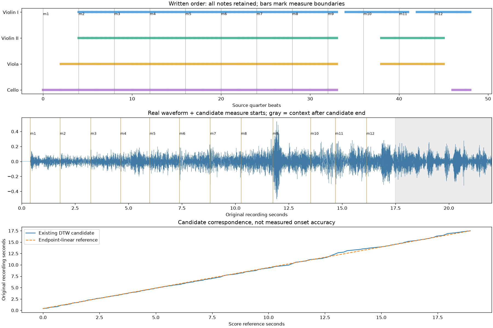

R/R RIBBON ROOM실험 기록 · 이전 결과를 보존한 검토 화면입니다. 새 그래픽 작업은 작업실에서 이어갑니다.
다른 실험 보기
B3.1 · 실제 연주 구간 대응 · 검토 대기
첫 12마디가 같은 순서로 들리는가?
멘델스존 Op.80 I악장 · Musopen String Quartet. 기존 자동 대응 초안을 재사용했습니다. 이번 단계는 시작·마디 순서·끝의 대응을 확인합니다.
악보: 0–48 quarter beats / 첫 음 후보: 원본 0.395초 / 12마디 끝 후보: 17.485초. 뒤 문맥을 들을 수 있도록 원음 22초를 제공합니다.
재생 버튼으로 시작하세요.

이 발췌의 반복·도약 관련 XML 표식: 0개. 표식이 없더라도 실제 연주 순서가 같다는 증명은 아닙니다. 발췌 밖의 반복과 연주상의 생략은 아직 검수하지 않았습니다.
시작은 RMS·feature frame에 따른 추정이며, 끝의 마지막 짧은 구간은 기존 초안의 단위 기울기 외삽입니다. 독립 공격음 검수와 오차 측정은 B3.4에서 진행합니다. 정렬 정확도·사용자 청취 확인은 대기입니다.
구간 대응 JSON · 자동 검사 · 입력·출처 · 보고서